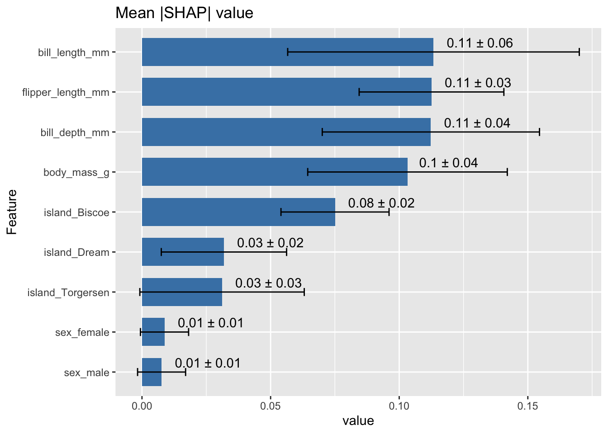
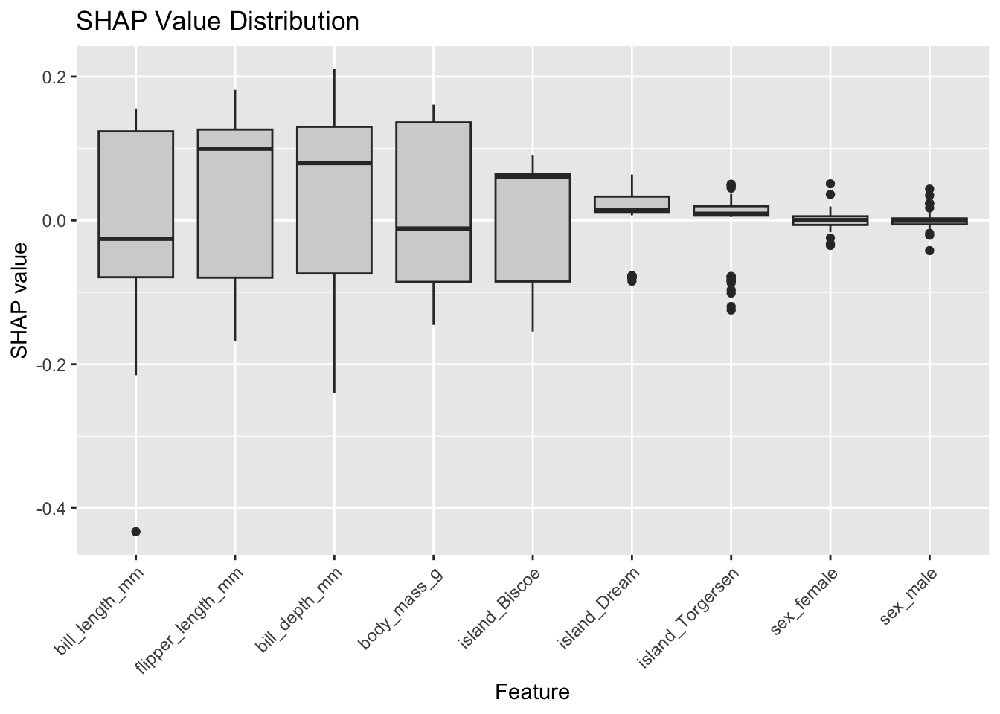
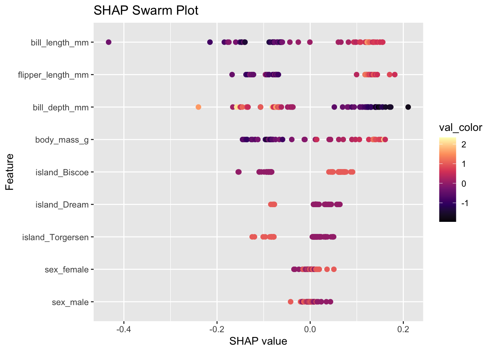

TidyML is a minimal library focused on providing all the essential tools for the workflow of a machine learning modelling process. It divides the whole process into 5 sequential steps:
Preprocessing
Model Building
Fine Tuning
Computing Performance Metrics
Sensitivity Analysis / Interpretable ML
Internally, due to the sequential nature of the workflow, each step stores new information of the analysis on an object called “tidy_object”. At any time during the process, the internal information of the analysis can be retrieved from the tidy_object using the “$” operator. The implemented fields are:
devtools::load_all()
ℹ Loading TidyML
Loading required package: tidyverse
── Attaching core tidyverse packages ──────────────────────── tidyverse 2.0.0 ──
✔ dplyr 1.1.4 ✔ readr 2.1.5
✔ forcats 1.0.0 ✔ stringr 1.5.1
✔ ggplot2 3.5.2 ✔ tibble 3.2.1
✔ lubridate 1.9.4 ✔ tidyr 1.3.1
✔ purrr 1.0.4
── Conflicts ────────────────────────────────────────── tidyverse_conflicts() ──
✖ dplyr::filter() masks stats::filter()
✖ dplyr::lag() masks stats::lag()
ℹ Use the conflicted package (<http://conflicted.r-lib.org/>) to force all conflicts to become errors
Warning: Objects listed as exports, but not present in namespace:
• create_models
• create_recipe
• transformer
We will first preprocess the data set using the preprocessing function. We will pass the dataset along with the formula for our problem. The preprocessing step requires to specify which columns are going to be preprocessed:
Numerical columns will be normalized by z-score
Categorical columns will be one-hot encoded
As well as the task to be performed: “regression” or “classification”.
In our case, we will preprocess all numerical columns and all categorical columns using the all keyword (by default):
The function build_model() allows to create a ML model. Each model has it’s own set of hyperparameters which we can choose to fine_tune by passing a range of values or to set to a specific value. By default each hyperparameter will be tuned within a given range. The The ML models implemented are:
Once the model has been defined, we can fine tune the hyperparameters using the fine_tune() function. There are 2 different hyperparameter tuning strategies:
Bayesian Optimization
Grid Search CV
Additionally, we will specify the metric used to select the best performing hyperparameters:
Regression
Classification
rmse
accuracy
mae
bal_accuracy
mpe
precision
mape
recall
ccc
specificity
smape
sensitivity
rpiq
kap
rsq
f_meas
mcc
detection_prevalence
j_index
roc_auc
pr_auc
gain_capture
brier_class
roc_aunp
We can visualize the tuning results by setting the plot_results parameter to TRUE:
tidy_object <-fine_tuning(tidy_object,tuner ="Grid Search CV", metrics ="roc_auc",plot_results = T )
[1] "############# Best Hyperparameters Found:"
# A tibble: 1 × 8
mtry min_n .metric .estimator mean n std_err .config
<int> <int> <chr> <chr> <dbl> <int> <dbl> <chr>
1 2 2 roc_auc binary 1 5 0 Preprocessor1_Model01
Results
Once we have found the best hyperparameter configuration we can compute the performance metrics of our model based on the test data using the show_results() function. There are different options for the results depending on whether we are doing a regression task or a classification task:
We can also perform sensitivity analysis for our fitted model using the sensitivity_analysis() function. There are currently different methods implemented, some of these methods only work for particular models:
Permutation Feature Importance (“PFI”)
SHAP
Integrated Gradients (Neural Network only)
Olden method (Neural Network only)
TO DO: SOBOL? Shapley Effects?:
tidy_object <-sensitivity_analysis(tidy_object, type ="SHAP")
Warning in sensitivity_analysis_list["SHAP"] <- results: number of items to
replace is not a multiple of replacement length



Regression Example
Create Dataset
We will again use the palmerpenguins dataset but choose a different formula for a regression task:
Due to the sequential nature of the processing, we can concatenate all the modelling steps using the %>% (pipe) operator without expliciting passing the tidy_object each time: